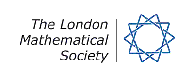

| |||||||||||||
|  |
The London Mathematical Society
15-17 September 2008, Mathematics Department, Swansea University | ||||||||||||
|
The 2008 South West and South Wales Regional Meeting of the London Mathematical Society will be held at Swansea University during the afternoon of Monday the 15th of September 2008. On the day, there will be three invited lectures, all aimed at a general mathematical audience. All interested parties (whether LMS members or not) are most welcome to attend this event. There will be a reception and dinner in the evening.
Limited funds are available to contribute to the expenses of the members of the LMS or research students. See the webpage for further details.
| |||||||||||||

|
|||||||||||||